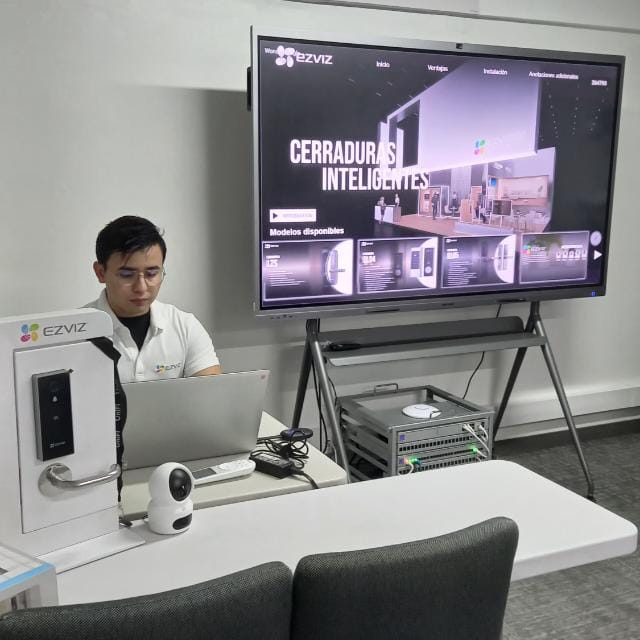
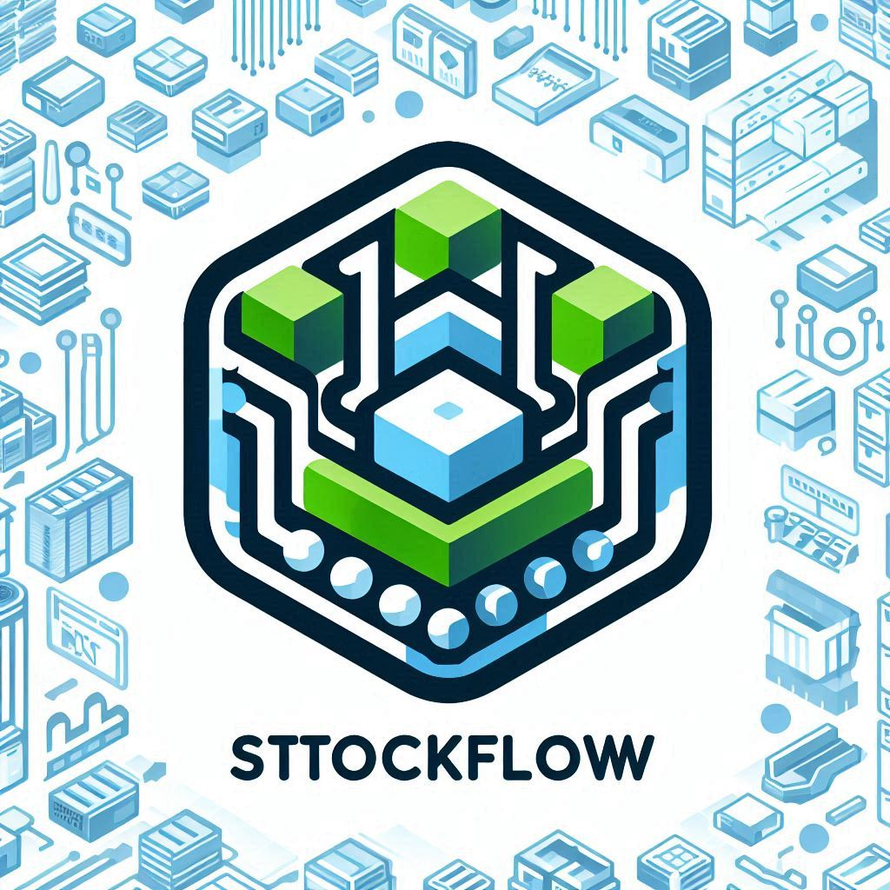
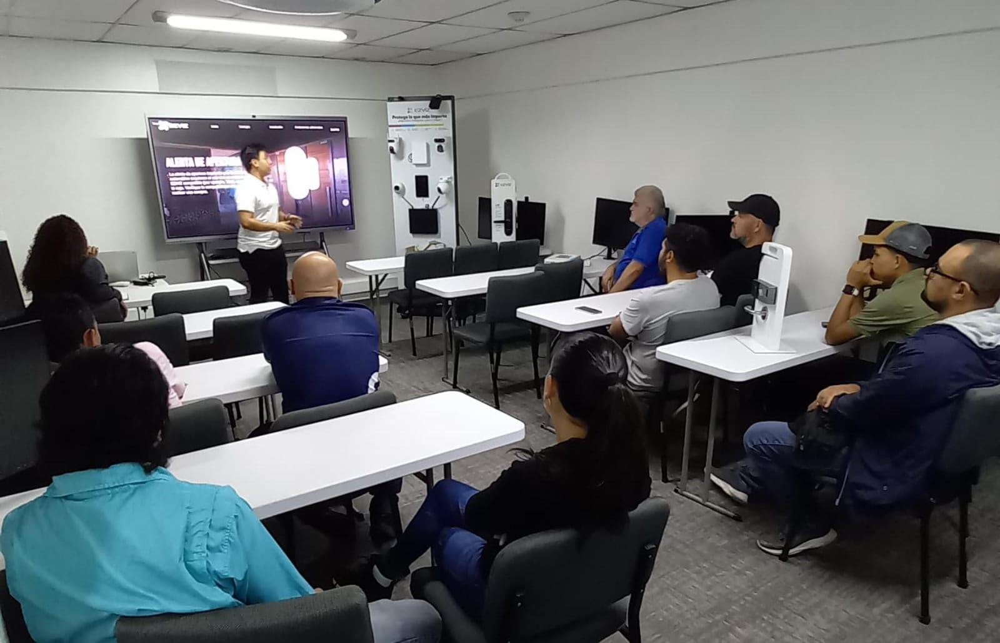
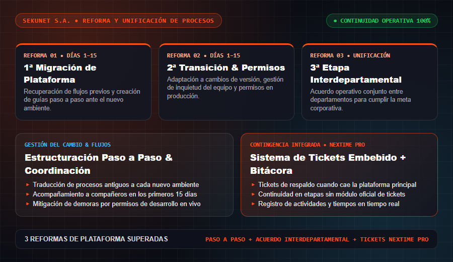
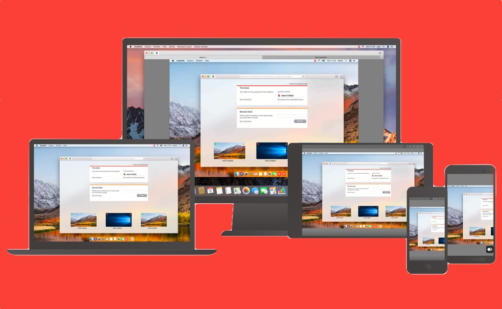
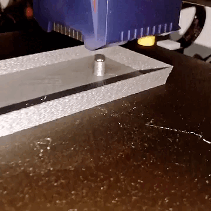
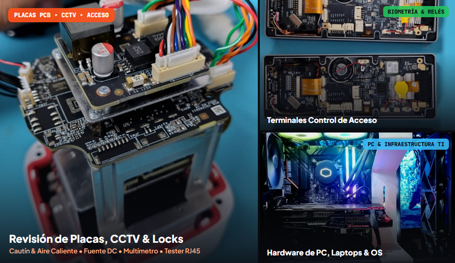
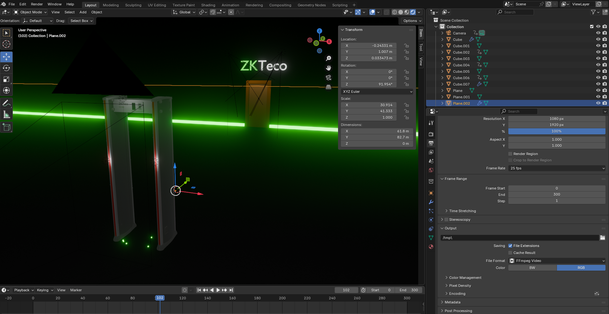

01
Creación de Flujos de Trabajo
Estructuración paso a paso de flujos operativos en SEKUNET S.A., coordinación entre departamentos y continuidad mediante el sistema de tickets embebido en NEXTIME Pro.
Técnico en Redes y Telecomunicaciones (CCNAv7) y Electrónica en Telecomunicaciones en SEKUNET S.A. (Salario actual: ₡600.000 colones), enfocado en la creación de flujos de trabajo, sugerencias en reforma de procesos, capacitación de personal y compañeros, y creador de NEXTIME Pro.

Herramienta propia de mejora en flujos de trabajo y plataforma de guías de soporte (sekunet.vercel.app).
Desde la organización operativa y capacitación de personal hasta el desarrollo de aplicaciones propias como NEXTIME Pro en SEKUNET S.A. (Salario: ₡600.000 colones).
Visitar portal activo sekunet.vercel.app ↗Estructuración paso a paso de flujos operativos en SEKUNET S.A., coordinación entre departamentos y continuidad mediante el sistema de tickets embebido en NEXTIME Pro.
Superación de 3 reformas de plataforma para unificar la información (primeros 15 días críticos por etapa), recuperando procesos para los compañeros y sorteando permisos en producción.
Entrenamiento directo a compañeros de trabajo, nuevo personal e integradores en tecnologías Hikvision, ZKTeco, redes Ubiquiti y protocolos internos.
Creador de NEXTIME Pro (con registro de actividades y sistema de tickets embebido para contingencia ante caídas de la plataforma principal) y del portal de guías 24/7.
5 años de experiencia en diagnóstico electrónico y reparación (estación de soldadura con cautín/pistola de calor, fuente DC, multímetro, amperímetro, tester Ethernet y bancos de prueba improvisados), creador de StockFlow Pro+ y modelado 3D.
Herramienta de Flujos • Abrir Demo ↗

Formularios & Datasheet Excel de Google

Formación de Personal & Clientes

3 Etapas de Plataforma & Tickets NEXTIME

Redes VLAN, Ubiquiti & VMS

Modelado & Impresión 3D

Placas PCB, CCTV, Acceso & Hardware PC

Visualización de Prototipos
Acreditación oficial en arquitectura inalámbrica Ubiquiti, seguridad electrónica y gestión de video Hikvision (HCSA-CCTV & Intercom, HCSA-VMS) y sistemas biométricos ZKTeco.
Formación técnica universitaria en redes y telecomunicaciones cursada en paralelo con la certificación Cisco CCNAv7 (Switching, Routing, and Wireless Essentials).
Título oficial del MEP / COVAO (Tomo 3, Folio 71, N° 3691) acompañado del reconocimiento oficial al Mejor Promedio de la Especialidad.
Soporte técnico TI respaldado bajo el mismo título de Redes y Telecomunicaciones llevado en la Universidad Juan Pablo II.